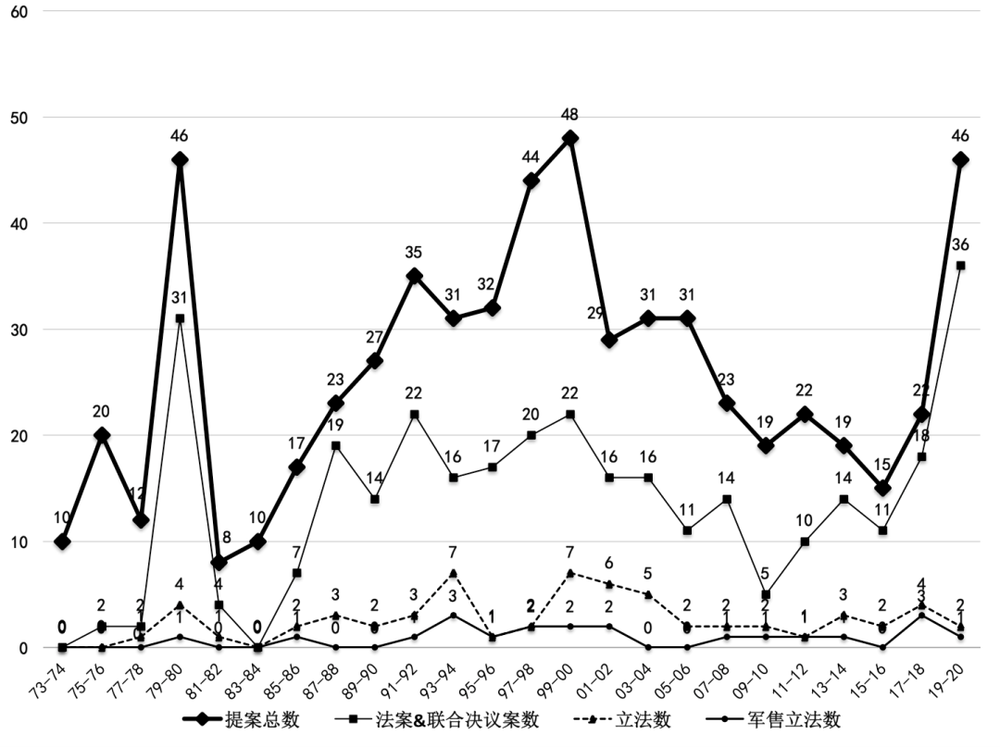
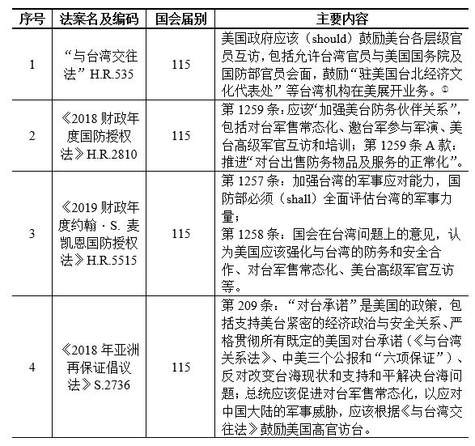

收录于合集

作品简介
【作者】
周文星 ，南京大学政府管理学院特任助理研究员、华智全球治理研究院研究员，主要研究中美关系、台湾问题、国际关系。
林冈 ，上海交通大学国际与公共事务学院特聘教授兼学术委员会主任、台湾研究中心主任、上海市台湾研究会副会长，主要研究台湾问题、中美关系、比较政治。
【文献来源】 周文星,林冈：《美国国会干涉台湾问题的新动向》，《现代国际关系》2020年10期，第53-60页。
美国国会干涉台湾问题的新动向
Changes in U.S. Congress’s Interference of the Taiwan Question
周文星
林冈
内容提要
特朗普主政以来，美国国会持续加大干涉台湾问题的力度，企图推动美台关系“正常化”。国会自2017年1月至今之所以极力干涉台湾问题，既与美国安全形势和中美关系等宏观层次因素的重大变化直接相关，也与美国“行政—立法”关系、台湾游说集团等中观层次因素，以及美国国会议员和特朗普总统等微观层次因素密不可分。国会干涉台湾问题呈现诸多新趋势，但难免诸多限制。放眼未来，中国的稳定发展是遏制美国国会干涉台湾问题的关键因素。只有中美关系稳定发展，美国对台政策才有可能回归理性。
正文内容
当世界各国和地区积极防控新型冠状病毒肺炎、遏制疫情进一步向全球蔓延时，美国国会却在2020年3月初加速表决通过了旨在帮助台湾加强其“国际空间”的“2019年台湾友邦国际保护及加强倡议法”（“Taiwan Allies International Protection and Enhancement Initiative (TAIPEI) Act of 2019”，又称“台北法”），该法案在3月26日经特朗普总统签署后正式生效，成为这位共和党籍总统主政以来制订的第6项涉台法律。自特朗普2017年1月入主白宫至今，美国国会议员在四年不到的时间里紧密发起了近70项涉台提案（下文统称“提案”），包括提出彰显台湾所谓“主权”的“2020年台湾主权象征法”（“Taiwan Symbols of Sovereignty (SOS) Act of 2020”）和呼吁美国政府放弃对台战略模糊政策的“台湾防卫法”（“Taiwan Defense Act”）这两项议案。这些议案的亲台程度极为罕见，“以台制华”的意图尤其明显，意味着美国政府正不断掏空中美“三个联合公报”所确立的“一个中国”政策，并企图推动美台关系“正常化”，这对于已经陷入低潮的中美关系无疑是雪上加霜。本文主要基于对美国第93~114届国会（1973~2016）期间涉台立法的实证分析及相关规律的总结，梳理特朗普主政以来第115~116届国会（2017~2020）干涉台湾问题的表现，分析其原因及趋势。
01
**** 特朗普主政以来美国会干涉台湾问题的表现
特朗普主政以来，美国国会加大干涉台湾问题的力度，极力通过立法提案、美台高官互访、发表亲台言论等方式，从法律、政策和舆论等层面，充当反华亲台急先锋，不断掏空美国历届政府遵守的“一个中国”政策，以切香肠的方式逐步推动美台政治关系的“官方化”和军事关系的“同盟化”，以期最终实现美台关系的“正常化”。
第一，国会持续加大涉台立法的力度，两院议员发起的涉台提案在多个方面表现抢眼。首先，议员提出的提案总数快速增加，年均提案数较过去八年明显增加。如图1所示，特朗普上任后的第115届国会（2017~2018）共发起22项提案，比奥巴马执政后期的第114届国会（2015~2016）高出7项。尤其值得注意的是，第116届国会第一会期（2019年1月3日~2020年1月3日）就发起了18项提案，而第二会期前9个月（2020年1月3日~2020年10月4日）居然出台了28项提案，高于第115届国会两个会期发起的涉台提案总数。国会在过去四年不到的时间里共发起68项涉台提案，大有赶超奥巴马执政八年提案总数（75项）的势头。以第115届国会和第116届国会开始至今的涉台提案数计算，特朗普主政时期的年均提案数为18.1项，高居历史第二位，仅次于克林顿时期的19.38项。若继续以这种趋势发展，国会在该会期剩余的3个月内势必发起更多提案。

图1 美国第93~116届国会（1973~2020）
涉台提案立法趋势
(资料来源见文末[1]）
其次，通过的法案数急剧增加，年均法案数同样高居历史第二位。在国会目前发起的68项涉台提案中，属于法案性质的多达54项，年均法案数14.4项，仅次于历史之最的克林顿时期（18.8项），远高于位列其后的老布什时期（9项）、卡特时期（8.3项）、小布什时期（7.1项）和奥巴马时期（5项）。
再次，年均法案通过率和军售法案立法数已经分别高居历史第三和第二位。特朗普主政三年多来年均立法数为1.6项，仅次于克林顿时期的2.1项和小布什时期的1.9项。在已完成立法的6项法案（表1）中，有4项含军售条款，多于小布什和奥巴马时期的3项，仅次于克林顿时期的8项。鉴于第116届国会第二会期仍剩余3个月时间，上述指标可能再创历史新高。
表1 特朗普主政以来（2017.1~2020.10）
美国制订涉台法律概况

资料来源[2]
最后，涉台法案的覆盖面更广、敏感度更高，其亲台反华的程度之深、干涉台湾问题的力度之大皆前所未见。从议题来看，近年涉台法案涵盖了军事安全、高官互访、“国际空间”等三大主题。其中，军事安全层面旨在加强美台“防务伙伴关系”，包括对台军售常态化、邀请台方参与军演、提升台军作战能力等。表1所列法律，如2018~2020年连续三个财政年度的“国防授权法”和《2018年亚洲再保证倡议法》，和有待国会表决的“2019年台湾保证法”（Taiwan Assurance Act of 2019, S.878、H.R.2002）都致力于提升美台防务关系。“与台湾交往法”主张美国政府鼓励美台所有层级官员互访，意图无限制地突破上述门槛限制。“国际空间”主要是协助并保障台湾参与国际组织、巩固台湾与其“盟友”的关系。自2016年5月执政以后，蔡英文当局接连丢失7个“邦交国”。为阻止台湾当局进一步被国际社会“孤立”，美国参议院在2019年为其量身打造的“台北法”在2020年3月生效，该法规定美国国务院将考虑从经济、外交和安全层面，对改变对台关系的国家实行相关的奖罚举措（详见表1）。2020年5月19日，众议员斯科特·佩里（Scott Perry）提出了编号为H.R.6945和H.R.6946的两项法案，分别禁止美国参与世界卫生组织和联合国的活动，除非这两个组织终止中国政府的合法席位并赋予台湾完全的“成员国”身份。[2]上述相关立法趋势表明，美国国会企图从立法层面掏空和虚化“一个中国”政策，推动美台政治、军事与安全关系的全面升级。如果这些法案最终完成立法，无疑将意味着美台向关系“正常化”迈出了实质性的一步。
第二，国会重量级议员频繁访台，通过与台当局互动的方式，参与和影响美国政府对台政策过程。“与台湾交往法”刚于2018年3月16日经特朗普签署生效，美国共和党资深议员、众议院外委会荣誉主席伊丽亚娜·罗丝- 雷缇南（Ileana Ros- Lehtinen）两周后便率领国会代表团访台，此后议员访台的级别和频率不断提高。例如，为了庆祝美台签订“与台湾关系法”四十周年，众议院前议长保罗·莱恩（Paul Ryan）在2019年4月率领一支由近30名两党议员组成的高级代表团高调访台。
与此同时，在美国国会亲台议员的策划和运作下，台湾当局相关部门领导人也频频访问美国，美台通过实际行动持续加强勾连。2019年2月，《2018年亚洲再保证倡议法》与“台北法”的提出者、参议院外交关系委员会东亚、太平洋和国际网络政策小组委员会主席科里·加德纳（Cory Gardner）及其他5名共和党亲台议员致信众议院议长南希·佩洛西（Nancy Pelosi），声称中国大陆“持续升级威胁台湾民主与主权的言行”，敦促议长邀请蔡英文以“民主领导人”的身份到美国国会联席会议发表演讲，向世界发出美国“将永远与台湾站在一起”的重要信息。[3] 当该诉求无果之后，亲台议员再次策划并最终促成了新当选的台湾地区副领导人赖清德于2020年2月3日的赴美行程，使赖成为中美建交后台湾当局访问华盛顿特区的最高层级政治人物。[4]“与台湾交往法”生效后，美台高级别官员互访将逐渐呈现常态化的发展趋势，美国国会议员扮演着日益关键的角色。
第三，国会领袖和重量级议员频频发表亲台言论，公开支持台湾当局抗衡中国大陆，打“台湾牌”制衡中国的意图相当明显。美国联邦议员访台期间都曾公开发表同情和支持台湾当局而谴责中国政府的言论，例如罗丝- 雷缇南在2018年4月访台期间就曾公开承诺，“华府必须确保台湾拥有全部所需工具，保护它不受中国的‘侵略’”。[5] 2019年6月，加德纳访台期间在新闻发布会上表示，他将确保“台北法”法案完成立法，并在大陆“打压”台湾的情况下全力支持和帮助后者参与国际组织以及加强与其“友邦”的关系。[6] 2020年3月4日，在众议院以415比0的票数无异议通过了“台北法”法案之后，议长办公室随即发表了佩洛西的祝贺词，声称数十年以来国会始终“骄傲地与台湾站在一起”，而该法案的通过表明国会“再次重申对自由、开放和民主台湾的坚定支持”，表示国会将继续向世界表明美国永远支持台湾。[7]
特朗普主政近4年以来，国会从立法、行动和舆论等层面加大力度干涉台湾问题，以切香肠的方式淡化美国的“一个中国”政策，企图实现美台关系的“正常化”。2018年制订的“与台湾交往法”和《2018年亚洲再保证倡议法》以及2020年制订的“台北法”等3项法律，已被国会视为与“与台湾关系法”同等重要的涉台文件。更关键的是，特朗普行政当局正在实际层面贯彻这些法律。“台北法”制订后不久，蔡英文当局以台湾“抗疫有成”为由谋求常态化参与世卫组织的相关活动，得到美方的支持。美国卫生及公众服务部部长亚历克斯·阿扎尔（Alex Azar）和国务院副国务卿基斯·克拉奇（Keith Krach），分别于2020年8月初和9月初率团高调访问台湾，成为自1979年以来访台级别最高的内阁级官员和国务院高官。美国国会干涉中国内政的强硬姿态，无疑将给中美关系造成更加严重的危害。
02
**
**
特朗普主政以来国会干涉台湾问题的原因
美国总统虽然依宪享有外交政策主导权，但作为联邦最高立法机构的国会也被赋予了一定的外交权限，可以在不同程度上参与美国政府外交决策过程。美国对台政策是其对华政策的一部分。台湾问题出现之后，尤其自中美建交前后至今，美国国会始终在对台政策过程中扮演重要角色。比较1973年以来历届美国国会介入对台政策过程可知，过去三年以来国会极力干涉台湾问题具有多重原因。
从宏观层面而言，美国安全形势和中美关系的变化是国会加大力度干涉台湾问题的结构性原因。美国对自身安全形势及中美关系的认知、定位及相关政策，决定了国会介入对台政策过程力度的大小。在美苏争霸尤其是里根时期（1981~1988），涉台提案年均数处于历史最低的7.25项，但在苏联解体前后迅速翻番至老布什时期第101~102届国会（1989~1992）的15.5项，并稳步增长到克林顿时期第103-106届国会（1993~2000）的19.4项；当美国外部形势因“9·11事件”再度恶化时，年均提案数骤然降至小布什时期（2001~2008）的14.3项和奥巴马时期（2009~2016）的9.4项。特朗普行政当局上台之后不再重视与中国在应对气候变暖、朝核问题等全球重大议题的战略合作，反而将中国视为战略竞争者，[8]并在“美国优先”的口号下将两国的贸易纠纷升级为贸易战，极力推动中美在科技、贸易甚至文化层面的“脱钩”，两国关系正陷入过去40年以来的最低潮时期。美国政府和社会弥漫着反华气氛，为国会介入台湾问题提供了有利的环境。
从中观层面来看，“行政—立法”关系的变化、台湾游说力量的复苏以及美国保守派智库的声援，是国会介入对台政策过程的重要驱动力量。首先，美国联邦政府内部行政与立法部门关系的强弱分立状态，显著影响了国会涉台立法的强弱程度。从里根时期到老布什时期，共和党从控制参议院（1981~1986）到失去两院多数党地位（1987~1992），与之相伴随的是涉台提案数从第97届国会（1981~1982）的8项，持续增长到老布什后期第102届国会（1991~1992）的35项。党派分歧对涉台提案的影响，在三届国会（1995~2000）处于强分立政府形态的克林顿总统任内体现得最为明显。当时反对党议员利用对台政策攻击执政当局，发起了总数为155项涉台提案中的110多项，是民主党议员提案数的4倍左右。小布什时期有两届国会属于一致政府状态，一届属于弱分立状态，因此涉台提案明显低于老布什后期和克林顿时期。特朗普所在的共和党在2018年中期选举失去了众议院多数党位置，从而由一致政府变为弱分立政府形态，涉台提案相应大幅增加，从22项增加到46项。两党议员与白宫皆致力于推动美台关系的全面升级。在众议院与民主党的弹劾攻势下，非建制派出身的特朗普总统毫无保留地签署了两院通过的多项涉台法案，更无意制衡国会介入对台政策过程，无疑助长了立法机构干涉台湾问题的意愿。
其次，台湾当局的游说和美国保守派智库的声援，为国会发起涉台提案添加了润滑剂。笔者整理美国司法部有关游说数据发现，李登辉执政十二年期间（1988.1.13~2000.5.20）游说国会的总额将近4000万美元，是此前十年游说总额（超过1100万）的3倍以上。[9] 台湾当局对国会山长期的财力与人力投入，换来20世纪90年代中后期亲台提案数的暴增和立法通过率的提升。第103~104届国会（1993~1996）共出现近20项邀请李登辉访美和近30项呼吁台湾加入国际组织、对台军售和加强对台承诺的提案。1991~2000年共制订20项涉台法案，其中含军售条款的法案高达11项。与此对应，当马英九当局将对美游说总额降低至1700多万美元时，美国国会相应地减弱了对台湾问题的干涉力度。不过，最新司法部报告显示，蔡英文上任之后再次恢复对美积极游说的趋势，难免刺激国会议员再度积极介入对台政策过程。
此外，美台关系的急剧提升离不开相关利益集团与保守派智库的积极运作。例如，“台独”组织“台湾人公共事务会”（Formosan Association for Public Affairs, FAPA）曾游说美国国会施压克林顿当局向李登辉发放签证并推动后者于1995年访美，但在陈水扁和马英九时期一度处于边缘地位。在中美关系恶化和美台关系回升的背景下，该机构近年来再次加强了对美国联邦议员的“草根”游说，与蔡英文当局遥相呼应、里应外合。大量资料表明，正是FAPA一手策划和推动了《与台湾交往法》的立法。[10] 此外，传统基金会、美国企业研究所、哈德逊研究所等保守派智库，尤其是与民进党交往甚密的全球台湾研究中心（Global Taiwan Institute）和2049计划研究所（Project 2049 Institute）等智库，通过发表“亲台反华”的文章评论、出席国会作证、赴台拜会相关政治人物等方式，鼓吹提升美台关系，甚至主张彻底改变美国政府既定对台政策，为国会介入对台政策过程提供政策支持。[11]
在微观层次，国会议员因素、特朗普总统本人的人物性格及执政风格，直接推动了2017~2020年涉台提案的迅猛发展。国会中真正关注并了解台湾问题的议员并不多，但国共内战时期主张支持蒋介石政权的“中国帮”（China bloc）议员，到中美建交后“台湾帮”议员，再到新世纪之后成立的台湾连线（Taiwan Caucus）成员，始终是积极介入对台政策过程、阻碍中美关系正常发展的重要因素。例如，小布什时期涉台提案几乎全部出自台湾连线成员之手，其中众议院国会台湾连线共同主席史蒂夫·夏波（Steve Chabot）和罗伯特·安德鲁斯（Robert Andrews）等议员每人就发起3~7项，国会台湾连线创始共同主席达纳·罗拉巴克（Dana Rohrabacher）等人联署的提案更是多达30项。特朗普主政以来，为了发起更多友台提案遏制中国发展，台湾连线的新世代议员借助国会浓厚的反华氛围，更为活跃，这也是国会亲台势力回潮的重要原因。
以共和党议员为主的连线成员，包括夏波、新任参议院台湾连线主席詹姆斯·英霍夫（James M. Inhofe）、唐·培根（Don Bacon）、迈克·麦克考儿（Michael T. McCaul）、泰德·约霍（Ted S. Yoho）、林赛·格雷厄姆（Lindsey Graham）等，“包揽”了过去近四年的绝大多数涉台提案。即便是由民主党议员提出的3项议案，即《2018、2019与2020财政年度达蒙·保罗·尼尔森和马修·杨·波拉德情报授权法》（Damon Paul Nelson and Matthew Young Pollard Intelligence Authorization Act for Fiscal Year 2018, 2019, and 2020）、《2020财政年度国防授权法》和《台湾奖学金法》（Taiwan Fellowship Act），也都是由台湾连线成员亚当·希夫（Adam Schiff）、亚当·史密斯（Adam Smith）和爱德华·马基（Edward Markey）分别发起。在中美关系交恶、台湾游说力量复苏、美国保守派智库声援等因素的鼓动和刺激下，数量持续增多且把持国会重要职位的亲台议员将持续干涉台湾问题。
观察1973年至今美国对台政策的发展演变可知，总统维护中美关系的意愿是制衡国会介入对台政策过程的主要变量。例如，克林顿总统和奥巴马总统比较重视中美战略合作，不希望因台湾问题影响中美合作大局，而在该问题上相对谨慎克制，前者游说国会阻止了“台湾安全加强法”（“Taiwan Security Enhancement Act”）的立法过程，后者则强烈反对亲台议员借“与台湾交往法”等议案插手台湾问题。从特朗普在2016年12月打破常规以候任总统的身份与蔡英文通电话，再到其上任后对台出售最新型F-16V战机等进攻性武器、将台湾纳入美国印太战略，不仅表明特朗普对台湾问题敏感度认识不足，更凸显其热衷于交易的商人性格和充满不确定性的执政风格。在对台政策上，特朗普总统不仅不反对国会的介入，反而“放任”国会插手台湾问题，对国会制衡的缺位无疑为后者干涉台湾问题大开“绿灯”。特朗普在其个人推特账号上质疑世卫组织忽略台湾当局卫生官员有关新冠病毒存在人传人可能性的原因，赞扬台湾方面的上述“贡献”，并开始将疫情在美国的传播“甩锅”给中国。[12] 美国国会亲台议员随后趁势推出大量相关议案，形成立法与行政部门携手挑战中国核心利益的局面，使国会干涉台湾问题呈现出诸多新的特征与趋势。
03
美国国会干涉台湾问题的局限
特朗普行政当局持续强化对华战略竞争甚至对抗的势头，导致中美关系日益恶化，进而为台湾当局加强对美游说、美国保守派智库积极“挺台”、国会议员强势主导对台决策提供了诱因。过去三年半以来，国会在实质行动和宣传舆论层面，尤其是立法层面加大了干涉台湾问题的力度，提出和制订多项亲台法案，以期掏空中美建交以来美方长期坚持的一个中国政策， 推动美台关系的“正常化”，最终达到“以台制华”的目的。尽管美国国会强势介入和主导对台政策产生了一系列消极的后果，但其干涉行为却存在不少局限。
第一，在玩弄“以台制华”的手法运用上，国会存在较为明显的党派差异。在2017年1月至今发起的68项涉台提案中，共和党议员就主导了61项，包括54项议案中的50项、13项决议案中的11项，以及1项（对《2018年亚洲再保证倡议法》提出的）修正案。比较而言，民主党议员在第115届国会仅提出1项仅需本院表决通过的简单决议案，自116届国会开会至今也仅发起6项提案，包括4项议案和2项决议案。从历史各个阶段的提案数据来看，过去三年多以来民主党发起的涉台提案处于历史最低，年均提案仅1.6项，远远低于老布什时期的年均10.3项，也不及里根、克林顿和小布什时期的5项，差不多只是此前历史最低的奥巴马时期（年均3项）的一半左右。这意味着民主党议员在干涉台湾问题上，并未与共和党议员形成完全一致的深度共识。这表明特朗普总统可能动员本党议员打“台湾牌”、对中国“极限施压”，以赢得中美贸易谈判的优势。这也在一定程度上表明，特朗普在弹劾案的阴影下不得不顺应本党议员的压力，以换取他们的政治支持。
第二，绝大多数议员在打“台湾牌”时仍拿捏有度，没有跨越“一个中国”红线。在制定《2018财政年度国防授权法》的过程中，国会最终通过并向总统提交的法案是涉台条款更少的众议院版（H.R.2810），而非涉台条款敏感度更高的参议院版（S.1519）。[13]在“与台湾交往法”等重要法案中立法者更倾向于使用对总统与行政当局不具法律约束力的政策声明或国会意见（sense of Congress），使法案既起到政策攻势和舆论造势的效果，同时又为白宫日后采取相关行动保留较多的自由。“台北法”既将台湾视为一个“nation”（兼有“民族”与“国家”的双重意义），同时又采取多种举措支持和帮助台湾加入所有不以“国家身份”为前提的国际组织，是美国国会在涉台立法过程中刻意维持模糊的典型做法，体现了美国在对台政策上固有的战略模糊政策。
第三，美国主流战略界主张维持台海关系现状以及两岸与美国三边关系的微妙平衡，反对并约束国会保守议员的冒进行为。在关键议题，尤其是彻底调整美国现有的对台政策框架、强烈冲击美国的“一个中国”政策时，以自由派和中间派智库为多数的主流思想界抱持更为明确的反对立场。美国战略与国际研究中心负责亚洲事务的资深副总裁迈克尔·格林（Michael Green）认为，美国最好应该首先制定一项完整的亚洲战略，而非急于借台湾问题开罪中国大陆，委婉地批评“特蔡通话”。[14] 当听闻少数共和党议员致信众议院议长佩洛西邀请蔡英文到访国会发表演讲一事后，前美国在台协会（American Institute in Taiwan）理事主席、现布鲁金斯学会非常驻资深研究员卜睿哲（Richard C. Bush）随即撰文表示反对，认为国会此举违反“美台关系的基本原则”，美国应基于实际情况而非“按照我们认为的那样[对台湾]提供帮助”。[15]
最后，目前国会试图通过立法途径全面主导对台决策的模式并不具有可持续性。除了公开表示对台军售可为美国带来切实的金钱收益和创造工作岗位以外，特朗普本人在战略层面对台湾并不感兴趣，更多地是将台湾当作遏制中国的一张牌，以在中美博弈中换取更多的利益，因为他在很大程度上放任国会主导对台政策。如果特朗普在2020年美国总统大选中连任失利，那么白宫极有可能再度牢牢控制对台决策主导权，从而挤压国会保守议员与行政部门亲台势力的活动空间。
涉台法律能否落实也存在问题。特朗普主政以来制订的几项涉台法律都由主张“以台制华”的保守共和党议员发起，不少法律冲撞“一个中国”政策的意图明显。如果拜登赢得大选，这些法律在多大程度上落实为具体政策存在一定的变数。民主党候选人拜登长期任职于参议院外交关系委员会，通晓外交事务，熟知台湾问题对中美关系的敏感性。拜登近期表示，他上台后将与传统盟友、新兴伙伴建立统一战线，以应对中国挑战。[16] 鉴于拜登在台海政策上维持战略模糊的强烈偏好，以及在气候变化、全球经济增长与朝核等议题上需要与中国合作的客观实际，显示他将重回美国历届政府遵循的“一个中国”政策，在对台政策与对华政策上取得微妙平衡。[17] 不过，如果特朗普迎来第二任期，美国国会和台湾当局又难免担心如前国家安全顾问约翰·博尔顿（John Bolton）在其新著《事发之屋：白宫回忆录》中所预测的那样，“台湾位列[可能被美国抛弃]清单的首位”。[18]
04
结语
特朗普主政以来，美国国会通过强化涉台立法、议员频繁访台、舆论宣传挺台的方式，持续加大干涉台湾问题的力度、深度与广度，向台湾当局和“台独”势力发出了混乱的政治信号，导致后者继续采取顽固的“抗中”政策，不仅损害了中美关系的发展，而且不利于两岸关系的和平发展与中国的统一进程。
通过结合对第93~116届国会期间涉台提案的实证分析及其相关规律，本文认为，美国安全形势、中美关系、美国行政—立法关系、台湾游说集团、国会亲台议员以及特朗普总统等内外层次因素的变化和作用，构成了过去三年多以来国会加大力度干涉台湾问题的诱因。中美战略竞合关系在很大程度上决定美国总统的对台政策态度，并进而影响联邦政府行政—立法系统在对台政策过程中的互动。中美战略合作度越高，美国行政当局越可能采取对华有利的政策，总统也越有可能积极说服国会放弃涉台提案或否决国会的涉台提案，挤压国会在台湾问题上的政策选项，确保中美合作大局不受台湾问题的负面影响；中美战略竞争度越激烈，行政当局越可能放松在台湾问题上的克制态度，国会干涉台湾问题的力度就越大，行政与立法部门联手“以台制华”的倾向性越强。
美国对台湾的安全承诺、中国政府在台湾问题上的核心利益以及美国对华合作的客观需求，使台湾问题深嵌入中美关系之中，使之成为可能导致这两大强国迎头相撞的导火索。正是因为没有处理好上述关系，特朗普当局当前的对台政策正陷入一个两难困境。一方面，为了维持其霸权地位、遏制中国的战略优势，美国行政当局与立法部门携手“以台制华”，结果是亲台提案的急剧增长；另一方面，美国打“台湾牌”又难免损害中美关系，进而影响两国在全球重大议题上的合作前景，损害美国维持其全球领导地位的重大利益。美国政府应清晰认识到，介入中国内政不仅无助于台湾问题的解决，而且影响中美战略合作大局，从而背离其核心利益。正如美国知名台海问题专家唐耐心（Nancy N. Tucker）生前所呼吁的，“美国理应为促成[台湾问题的]解决方案肩负起政治与道义责任”，“而非仅仅采取对抗姿态并成为台海僵局的一方”。[19] 如果任由上述趋势发展，美国难免会在台海事务中越陷越深、难以自拔，长远来看将不利于其亚太地区的利益维护。
中美因对抗苏联而实行战略联手、建交，双边关系因快速发展的经贸关系有所强化，如今因大国之间结构性的冲突而走向战略竞争甚至对抗。考虑到当今世界经济、科技与社会的相互依存，包括中美两国在内的利益攸关方都无法承受世界最大的两个经济体之间的恶性竞争后果。在中美战略竞争的后疫情时代，美国在全球重大战略议题上仍离不开中国的参与和合作。积极管控竞争，中美不仅可以避免走向冲突与对抗，而且有可能构建总体稳定的大国关系。台海军事力量平衡早已倾向大陆，随着两岸经济社会融合的推进，大陆将更加牢固地掌控台海事务的话语权，并将在一个中国原则的框架下解决台湾问题。换言之，中国的和平发展是遏制国会逆势干扰台湾问题的关键因素。
鉴于美国在全球重要议题上仍离不开中国的参与及合作，祖国大陆在台海事务中的主导地位日益增强，美国国会干涉台湾问题仍面临诸多制衡因素。只要中国继续深化改革开放、保持稳定发展，从而增强抵御和威慑外力插手台湾问题的能力，美国暂居优势地位的对抗性思维终将面对这一现实而回归理性，并再次真正从美国的核心利益出发，在中美竞合的框架下应对和处理两国之间最重要而敏感的台湾问题。
参考文献
[1]https://www.congress.gov/115/plaws/publ135/PLAW-115publ135.pdf（上网时间：2019年6月20日）。
[2]H.R.6945 – To prohibit all … and for other purposes , May 19, 2020; H.R.6946 – To prohibit all … and for other purposes , May 19, 2020.
[3] “Gardner, Rubio, Cotton, Cornyn, and Cruz send letter requesting Speaker Pelosi invite the President of Taiwan to address a joint session of Congress”, https://www.gardner.senate.gov/newsroom/press-releases/gardner-rubio-cotton- cornyn-and-cruz-send-letter-requesting-speaker-pelosi-invite-the-president-of- taiwan-to-address-a-joint-session-of-congress (上网时间：2020年3月11日).
[4]George Liao, “Vice President-elect Lai on a trip to U.S. made possible by Taiwan Travel Act,” Taiwan News , February 4, 2020, https://www.taiwannews.com.tw/en/news/3870877 (上网时间：2020年4月18日).
[5]Stacy Hsu, “US lawmaker urges action on Taiwan,” Taipei Times , April 3, 2018, P.1.
[6]Shelley Shan, “Cory Gardner vows to push TAIPEI Act,” Taipei Times , June 3, 2019, P.1.
[7]“Pelosi Statement on Passage of TAIPEI Act,” https://www.speaker.gov/newsroom/3420–1 (上网时间：2020年3月11日).
[8]“Remarks by Vice President Pence on the Administration’s Policy Toward China,” The White House , October 4, 2018, https://www.whitehouse.gov/briefings-statements/remarks-vice-president-pence- administrations-policy-toward-china/ (上网时间：2018年11月26日).
[9] 根据《外国代理人登记法》（ Foreign Agents Registration Act , FARA ），美国司法部要求所有美国代理人定期向司法部提交与有关外国政府关系、活动和资金信息的详细报告，司法部汇总报告后每年向国会提交年度报告（1996年后改为半年度报告）。美国司法部官网（https://www.justice.gov/nsd- fara）公布了1977年至2018年6月台湾对美游说金额的数据（1992~1994年数据缺失）。本文根据该报告统计所得的对美游说金额应远低于台湾当局对美游说的实际金额。如果按1995~2000年（6年期间游说总额为2158万美元）的年均游说金额计算1992~1994年3年期间的缺失数据，李登辉时期的游说费用总额约在3900万左右。可参见：周文星、王伟男：“台湾当局对美巨资游说与美台关系”，《中美印象网》，2020年6月24日，http://m.uscnpm.org/wap/article.aspx?d=13%3E&id=22113(上网时间：2020年10月4日)。
[10] 为了促成“与台湾交往法”法案的立法，FAPA官网及其时事通讯加大对该法案的宣传、向在美台湾侨民提供联署书模板，并教育台湾侨民向所属选区联邦议员写联署书和登门拜访议员的详细步骤。详见：https://fapa.org/wp/；FAPA, FAPA News , Vol. XXXV-I, Spring 2017; FAPA News , Vol. XXXVI-I, Spring 2018。
[11] 可参见： Reinforcing the U.S.-Taiwan Defense Alliance (Washington, D.C.: Hudson Institute, September 11, 2019); “Walter Lohman on Taiwan: America’s precarious ‘one China’ policy,” Taipei Times , July 29, 2019, P.6.
[12] “Donald J. Trump Twitter,” https://twitter.com/realdonaldtrump/status/1251138462968922119 （上网时间：2020年3月11日）。
[13] 众议院版（H.R.2810）包含两项涉台条款，即“加强美台防务伙伴关系”（第1259条）和促进对台防务物品和服务的正常化（1259A）；参议院版（S.1519）包含美台防务伙伴关系（第1270条）、美台军舰相互停泊（第1270A条）、提升台湾海底战争能力（第1270B条）、邀请台湾军事力量参与联合军演（第1270C条）和就美台资深军事军官和官员交流向国会提交报告（第1270D条）等五项涉台条款。参众两院版分别参见：https://www.congress.gov/115/bills/s1519/BILLS-115s1519pcs.pdf; https://www.congress.gov/115/plaws/publ91/PLAW-115publ91.pdf。
[14] Michael Green, “How bad was Trump’s Taiwan phone call?” Foreign Policy , December 3, 2016, https://foreignpolicy.com/2016/12/03/how-bad-was-trumps- taiwan-phone-call/ (上网时间：2020年9月2日).
[15] Richard C. Bush, “The Problem with Inviting Taiwan’s Tsai Ing-wen to Speak to a Joint Meeting of Congress,” Brookings Institution , February 8, 2019, https://www.brookings.edu/blog/order-from-chaos/2019/02/08/the-problem- with-inviting-taiwans-tsai-ing-wen-to-speak-to-a-joint-meeting-of-congress/ (上网时间：2019年3月8日).
[16] Joseph R. Biden, Jr., “Why America Must Lead Again: Rescuing U.S. Foreign Policy After Trump,” Foreign Affairs , March/April 2020, Vol.99, No.2, pp.64-76.
[17] Zhou Wenxing and Wang Weinan, “Will the US abandon Taiwan?” Think China , August 6, 2020, https://www.thinkchina.sg/will-us-abandon-taiwan (上网时间：2020年9月2日).
[18]John Bolton, The Room Where It Happened: A White House Memoir (New York, NY: Simon & Schuster, 2020), p.290.
[19] Nancy B. Tucker, Strait Talk: United States-Taiwan Relations and the Crisis with China , Cambridge, MA: Harvard University Press, 2009, p.280.
资料来源
[1]作者根据美国国会官网（https://www.congress.gov/）历年数据整理制作，数据统计截至2020年10月4日。
[2] H.R.535 – “Taiwan Travel Act” , US Congress, January 13, 2017; H.R.2810 – “National Defense Authorization Act forFiscal Year 2018” , US Congress, June 7, 2017; H.R.5515 – “John S. McCain National DefenseAuthorization Act for Fiscal Year 2019” , US Congress, April 13, 2018;S.2736 – “Asia Reassurance Initiative Actof 2018” , USCongress, April 24, 2018; S.1678 – “TaiwanAllies International Protection and Enhancement Initiative (TAIPEI) Act of2019” , USCongress, May 23, 2019.
排版 高思慧
文章观点不代表本平台观点，本平台评译分享的文章均出于专业学习之用, 不以任何盈利为目的，内容主要呈现对原文的介绍，原文内容请通过各高校购买的数据库自行下载。
**
**
**
**
**
**
添加 “国小政”微信
获取最新资讯